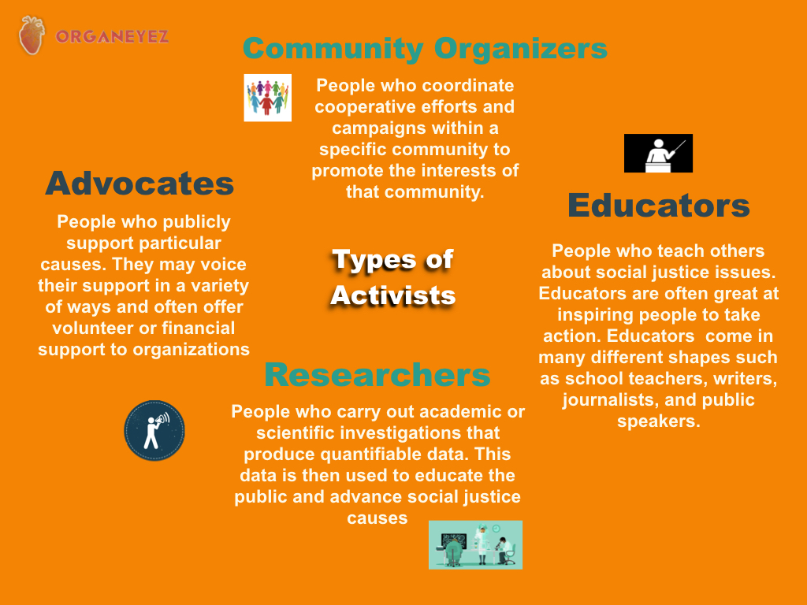

Organeyez Podcast
Follow our podcast blog here
The goal of our podcast is to seek out activists who have found valuable strategies for improving the growth and development of their organizations or the movements they support.
We've identified 4 different types of activists and aim to engage those who have
If you run an organization or participate in grassroots movements, this podcast is for you.
